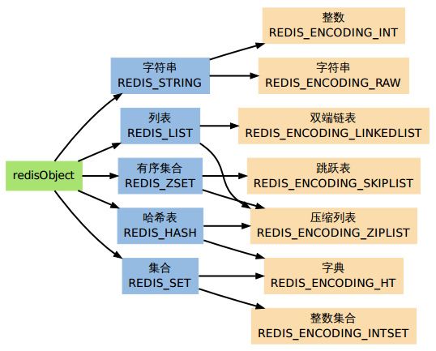
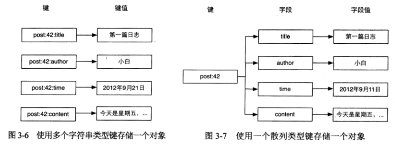
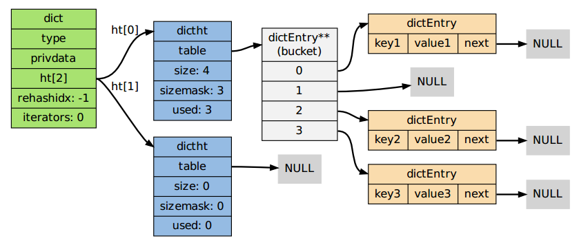
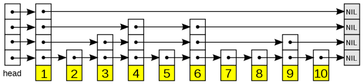

Redis
1 Redis
- Redis
- REmote DIctionary Server。
作为数据库开发，但是已经广泛用于缓存、队列系统。
| 特性 | 适用于 |
|---|---|
| 过期时间，持久化支持，丰富的数据类型 | 缓存系统 |
| 列表类型键，阻塞式读取 | 队列系统 |
| 「发布／订阅」消息模式 | 聊天室等 |
存储方式
- 以字典结构存储数据，并允许通过 TCP 协议读写数据
- 字典结构使得程序中的数据形式，与其在 Redis 中的存储形式可以尽量接近
- 数据可以直接映射到 Redis 中，而不需要类似关系数据库的存储方式（建立多个表并在读取时进行联合）
键空间
- Redis 是一个键值对数据库，采用字典结构以键值对的形式存储数据
- 每个数据库都有一个与之相对应的字典，这个字典被称为键空间（key space）
- 当添加一个键值对到数据库时（不论键值对是什么类型），程序就将该键值对添加到键空间
持久化
- 支持数据的持久化，可以定期将内存中的数据保持在磁盘中，重启之后可以再次加载使用
- 当物理内存用完时，可以将最近没有使用的数据交换到磁盘
内存预分配策略
- 对字符串进行
APPEND操作时，会自动分配等于新字符串大小的额外空间 - 再对同一个字符串进行
APPEND，如果追加内容的长度不超过已有的长度，就不需要再次进行内存分配 - 如果
APPEND操作很多，字符串长度又很大，就需要定时释放预分配空间，减少内存占用
多数据库
- 从 0 开始的数字索引代表，默认支持 16 个数据库
- 类似命名空间，与关系数据库的「数据库」概念不同
- 不支持自定义数据库名字，只能手动记录数据库与数据的对应关系
- 不支持每个数据库使用不同密码
- 数据库不完全隔离，
FLUSHALL可以清空所有数据库数据
1.1 Redis vs Memcached
| Memcached | Redis | |
|---|---|---|
| 本质 | 内存型缓存系统 | 内存型 NoSQL 数据库 |
| 存储方式 | 所有数据存储在内存中 | 不是所有的数据都存储在内存 |
| 数据类型 | 键值对 | 键值对，还支持列表、集合、散列表等 |
| 过期时间 | 可以设置 | 可以设置 |
| 备份 | 没有备份 | 支持备份（master-slave 模式） |
| CPU | 可以使用多核，支持多线程 | 只使用单核，单线程模型 |
Redis 和 MC 在性能方面没有高低之分，两者的性能都不是瓶颈。两者的区别在于功能上，如高级数据类型、持久化等。
| 简单键值存储的情况 | Memcached 内存利用率更高 |
|---|---|
| 采用 hash 结构 | Redis 内存利用率更高 |
2 数据类型

| 底层实现 | |
|---|---|
| 字符串 | SDS |
| 列表 | 双向链表、压缩列表 |
| 散列表 | 字典、压缩列表 |
| 集合 | 字典 |
| 有序集合 | 跳跃表、压缩列表 |
键值对
- 每个键都属于一个明确的数据类型，通过建立时的命令确定
- 使用数据类型不相符的命令操作键时会报错
键名
- 键名通常使用
对象类型:对象ID:对象属性的格式，如user:1:friends - 键值的长度一般远大于键名的长度，所以尽量使用有意义的键名，不用担心键名占用存储空间
2.1 字符串
- 所有数据类型的基础，其他类型可以认为是组织字符串的形式不同；
- 可以有多种形式，如整数、JSON 化对象、二进制数据（包括任何编码的字符）；
- 目前一个字符串类型键最大允许存储 512MB 数据；
SET <key> <value> [<expire_sec>] [<expire_ms>] [NX|XX]
GET <key>
MSET <key> <value> [<key> <value>]...
MGET <key> [<key>]...
APPEND <key> <value> # 尾部追加，不存在则设为 <value>
STRLEN <key>
INCR <key> # 值不是整数时会报错
INCRBY <key> <int>
DECR <key>
DECRBY <key> <int>
INCRBYFLOAT <key> <float>
GETBIT <key> <offset> # 如果偏移超过值长度，返回 0
SETBIT <key> <offset> <value> # 如果偏移超过值长度，中间的二进制位都设为 0
BITCOUNT <key> [<start> <end>] # 统计值中（某一范围内）有几个二进制位是 1
# 位运算
BITOP <operation> <dest_key> <key> [<key>]...
<operation> # AND, OR, XOR, NOT
<dest_key> # 结果存储在此键中
2.2 列表
- 存储有序的字符串列表；
- 一个键最多容纳 2^32-1 个元素，索引从 0 开始；
- 常用操作：两端添加元素、获取列表某一片段，复杂度为 1；
- 缺点是通过索引访问元素的速度较慢；
应用
| 栈 | 同侧进出 |
|---|---|
| 队列 | 异侧进出 |
| 最新记录 | 取头部 N 条 |
| 记录日志 |
LLEN <key> |
列表长度，时间复杂度为 1 |
|---|---|
LINDEX <key> <index> |
返回指定索引的元素 |
LSET <key> <index> <value> |
设定指定索引的元素的值 |
RPUSH <key> <value> [<value>]... |
表尾插入 |
LPUSH <key> <value> [<value>]... |
表头插入 |
RPOP <key> |
表尾弹出 |
LPOP <key> |
表头弹出 |
LRANGE <key> <start> <stop> |
返回指定区间，支持负索引 |
LTRIM <key> <start> <stop> |
保留指定区间，删除其他元素，支持负索引 |
LREM <key> <count> <value> |
删除值为指定值的元素 |
count > 0 表示从表头删除 N 个 |
|
count < 0 表示从表尾删除 N 个 |
|
count = 0 表示全部删除 |
|
LINSERT <key> BEFORE/AFTER <pivot> <value> |
从表头查找值为 pivot 的元素 |
| 在元素前或后插入新元素 | |
RPOPLPUSH <source> <dest> |
从 source 列表尾弹出元素，插入 dest 列表头 |
2.3 散列表
- 值采用字典结构，即
字段->字段值映射； - 一个键包含最多 2^32-1 个字段；
- 字段值只能是字符串；
- 适合存储对象：
- 键名：
obj_type:obj_id； - 字段：
prop_name； - 字段值：
prop_value；
- 键名：

HEXISTS <key> <field> |
|
|---|---|
HLEN <key> |
获取字段数量 |
HGET <key> <field> |
|
HMGET <key> <field> ... |
|
HGETALL <key> |
|
HKEYS <key> |
|
HVALS <key> |
|
HSET <key> <field> <value> |
设定字段、值，不区分插入和更新 |
HMSET <key> <field> <value> ... |
|
HSETNX <key> <field> <value> |
（字段不存在时）设定字段、值 |
相当于 HEXISTS + HSET |
|
HINCRBY <key> <field> <int> |
|
HDEL <key> <field> ... |
2.4 集合
- 一组无序且唯一的元素；
- 常用操作：加入和删除元素、判断某个元素是否存在，并集、交集、差集；
- 使用值为空的散列表实现，因此一个键最多可以存储 2^32-1 个元素；
SCARD <key> |
获取元素个数 |
|---|---|
SISMEMBER <key> <member> |
判断元素是否存在 |
SMEMBERS <key> |
获取所有元素 |
SRANDMEMBER <key> <count> |
随机获取元素 |
count > 0 表示返回 N 个不重复元素 |
|
count < 0 表示返回 N 绝对值个可能重复的元素 |
|
SADD <key> <member> ... |
添加元素，已经存在的元素则忽略 |
SPOP <key> |
随机弹出一个元素 |
SREM <key> <member> |
删除元素 |
SDIFF <key> ... |
计算差集 |
SINTER <key> ... |
计算并集 |
SUNION <key> ... |
计算交集 |
SDIFFSTORE <dest> <key> ... |
集合计算，并存储结果到目标集合 |
SINTERSTORE <dest> <key> ... |
|
SUNIONSTORE <dest> <key> ... |
2.5 有序集合
- 在集合类型的基础上，每个元素关联一个分数，不同元素的分数可以相同；
- 常用操作：获得分数最高（低）的 N 个元素，获得指定分数范围内的元素；
- 使用散列表和跳跃表实现；
- 读取位于中间部分的元素的时间复杂度为 logN，优于列表类型，但比列表类型更耗费内存；
分数
- 可以是整数或双精度浮点数；
- 命令中默认包含端点值，前加
(表示不包含端点； -inf+inf表示无穷小（大）；
ZCARD <key> |
获取元素数量 |
|---|---|
ZSCORE <key> <member> |
获取指定元素分数 |
ZADD <key> <score> <member> ... |
增加元素，覆盖已存在元素 |
ZINCRBY <key> <value> <member> |
|
ZREM <key> <member> ... |
ZCOUNT <key> <min> <max> |
获取指定分数范围内的元素数量 |
|---|---|
ZRANK <key> <member> |
获取元素排名，正序 |
ZREVRANK <key> <member> |
获取元素排名，逆序 |
ZREMRANGEBYSCORE <key> <min> <max> |
删除分数范围内的元素 |
# 返回指定分数范围内的元素 ZRANGEBYSCORE <key> <min> <max> [WITHSCORES] [LIMIT <offset> <count>] # 正序排列 ZREVRANGEBYSCORE <key> <max> <min> [WITHSCORES] [LIMIT <offset> <count>] # 逆序排列 <offset> # 在获得的元素列表上偏移 <count> # 只获取前 N 个元素
# 返回分数排名在指定范围内的元素 # 分数相同时，按照元素值字典排序 ZRANGE <key> <start> <stop> [WITHSCORES] # 正序 ZREVRANGE <key> <start> <stop> [WITHSCORES] # 逆序 <start>, <stop> # 索引从 0 开始，负数表示从后向前 WITHSCORES # 返回元素和分数
ZINTERSTORE <dest> <numkeys> <key> ... [WEIGHTS <weight> ...] [AGGREGATE SUM|MIN|MAX]
ZUNIONSTORE <dest> <numkeys> <key> ... [WEIGHTS <weight> ...] [AGGREGATE SUM|MIN|MAX]
<dest> # 存储结果的键
WEIGHTS # 进行计算时，每个集合中分数的权重
AGGREGATE # 决定结果集中的元素分数
3 数据结构
3.1 SDS
- SDS
- Simple Dynamic String
使用 SDS 表示字符串，而不是 C 字符串的优点：
- 更高效的长度计算
- 更高效的追加操作
- 二进制安全
typedef char *sds; struct sdshdr { int len; // 已占用长度 int free; // 剩余可用长度 char buf[]; // 实际保存字符串数据的地方 }
3.2 双向链表
typedef struct listNode { struct listNode *prev; struct listNode *next; void *value; // 节点值类型不做限制 } listNode; typedef struct list { listNode *head; // 表头 listNode *tail; // 表尾 unsigned long len; // 节点数量 // 函数指针，因为不同类型的值，需要不同的函数处理 // 列表可以指定执行这些操作的函数 void *(*dup)(void *ptr); // 复制函数 void (*free)(void *ptr); // 释放函数 int (*match)(void *ptr, void *key); // 比对函数 } list; // 迭代器 typedef struct listIter { listNode *next; int direction; // 迭代方向 } listIter;
3.3 字典
| 链表、数组 | 适合元素个数不多的情况 |
|---|---|
| 散列表 | 高效、简单 |
| 平衡树 | 复杂，更稳定的性能，更高效的排序操作 |
Redis 使用散列表实现字典。

typedef struct dict { dictType *type; // 依赖于类型的处理函数 void *privdata; // 类型处理函数的私有数据 dictht ht[2]; // 每个字典使用两个 Hash 表，用于实现渐进式 rehash int rehashidx; // 记录 rehash 进度的标志，-1 表示 rehash 未进行 int iterators; // 当前正在运作的安全迭代器数量 } dict; // 散列表 typedef struct dictht { dictEntry **table; // 表节点指针数组（桶），每个元素是一个指向表节点的指针 // 空间分配将在第一次往字典添加键值对时（或 rehash 时）进行 unsigned long size; // 指针数组的大小 unsigned long sizemask; // 指针数组的长度掩码，用于计算索引值 unsigned long used; // 表当前的节点数量 } dictht; // 散列表节点 typedef struct dictEntry { void *key; // 键 union { // 值 void *val; uint64_t u64; int64_t s64; } v; struct dictEntry *next; // 链地址法：用一个链表连接 Hash 值碰撞的多个键 } dictEntry;
| MurmurHash2 32 bit 算法 | 用于数据库、集群、散列键、阻塞操作等 |
|---|---|
| 基于 djb 算法的一个大小写无关散列算法 | 用于命令表以及 Lua 脚本缓存 |
3.4 跳跃表
- 跳跃表
- 一种随机化的数据，以有序的方式在层次化的链表中保存元素。
效率类似平衡树（查找、删除、添加等操作复杂度为logN），比平衡树简单、直观。
节点分为多个层，程序总是从高层先开始访问，然后随着元素值范围的缩小，慢慢降低层次。

4 配置
| 默认值 | ||
|---|---|---|
maxmemory |
最大可用内存（字节） | |
maxmemory-policy |
内存不足时，删除键的策略 | volatile-lru |
maxmemory-samples |
删除键时的取样数量 | |
| 不会比较所有的键，而是随机取 n 个键之后进行比较 |
maxmemory-policy
allkeys-lru |
对所有键使用 LRU 算法选取 |
|---|---|
allkeys-random |
对所有键随机选取 |
volatile-lru |
对设置生存时间的键使用 LRU 算法选取 |
volatile-random |
对设置生存时间的键随机选取 |
volatile-ttl |
生存时间最近的键 |
noeviction |
不删除键，返回错误 |
5 命令
命令不区分大小写。
所有命令都是原子操作
- 多个客户端连接时，不会出现竞态条件（race condition）问题
- 如果一个功能需要组合使用多个命令，则需要使用事务，或自定义原子操作
5.1 服务器
SELECT <index> |
切换到指定数据库，0 为起始 |
|---|---|
FLUSHDB |
清空当前数据库的所有 key |
FLUSHALL |
清空所有数据库的所有 key |
DBSIZE |
返回当前数据库的 key 数量 |
5.2 键
KEYS <pattern> |
查找符合模式的 key；会遍历所有键，影响性能 |
|---|---|
EXISTS <key> |
判断指定 key 是否存在 |
TYPE <key> |
返回指定 key 的数据类型 |
DEL <key> ... |
删除一个或多个 key |
5.3 过期时间
TTL <key> |
返回过期前剩余时间 |
|---|---|
EXPIRE <key> <seconds> |
设定过期时间 |
PEXPIRE <key> <mseconds> |
毫秒 |
EXPIREAT <key> <stamp> |
设定过期时间戳 |
PEXPIREAT <key> <stamp> |
毫秒 |
PERSIST <key> |
取消过期时间 |
SET 和 GETSET 命令也会取消 key 的过期时间 |
5.4 排序
对列表、集合、有序集合排序。有序集合只按照元素值排序，忽略分数。
SORT <key>
BY <pattern>
LIMIT <offset> <count>
GET <pattern>
ASC | DESC
ALPHA
STORE <dest>
5.5 事务
事务不包含回滚功能。
错误处理
- 语法错误，所有命令不执行
- 运行时错误，正确的命令继续执行
MULTI |
事务开始 |
|---|---|
EXEC |
执行事务队列 |
WATCH <key> |
监视 key |
| 如果一个 key 被修改或删除，则下一个事务会被打断，不会执行 | |
| 并不会阻止修改和删除行为，事务被打断后，需要被重新执行 | |
自动过期的 key 不被 WATCH 命令认为是修改或删除 |
|
UNWATCH |
取消所有对 key 的监视 |
5.6 Rehash
在 Hash 表的大小不能满足需求，造成过多 Hash 碰撞后进行扩容的操作。
6 PHP
6.1 Key
ttl() |
返回 key 剩余生存时间（秒） |
|---|---|
expireAt() |
设置过期时间戳 |
6.1.1 ttl()
ttl( $key )
| 返回值 | >=0 | |
| -1 | key 没有 ttl | |
| -2 | key 不存在 |
6.1.2 expireAt()
expireAt( $key, int $stamp )
6.2 String
set() |
|
|---|---|
setex() |
|
get() |
|
delete() |
6.2.1 set()
set( $key, $value )
6.2.2 setex()
setex( $key, $ttl, $value )
6.2.3 get()
get( $key )
6.2.4 delete()
delete( $key, ... )
6.3 Hash
hSet |
|
|---|---|
hGet() |
|
hGetAll() |
|
hIncrBy() |
6.3.1 hSet()
hSet( $key, $hashKey, $value )
6.3.2 hGet()
hGet( $key, $hashKey )
6.3.3 hGetAll()
hgetall( $key )
6.3.4 hIncrBy()
hIncrBy( $key, $member, int $value )
6.4 List
lPop() |
|
|---|---|
rPop() |
|
lPush() |
|
rPush() |
|
lSet() |
|
lLen() |
|
lRange() |
返回列表中的一段 |
lTrim() |
裁剪列表 |
6.4.1 lPop() rPop()
lPop( $key ) rPop( $key )
6.4.2 lPush() rPush()
lPush( $key, $value ) rPush( $key, $value )
6.4.3 lSet()
lSet( $key, $index, $value )
6.4.4 lLen()
lLen( $key )
6.4.5 lRange()
lRange( $key, $start, $end )
6.4.6 lTrim()
lTrim( $key, $start, $stop )